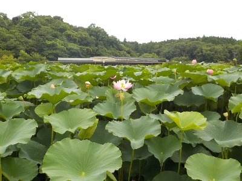
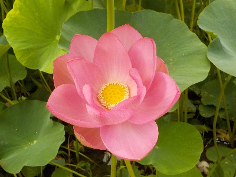
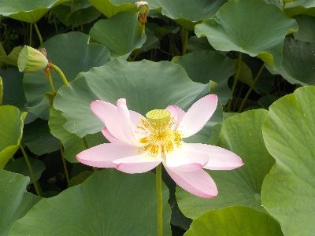
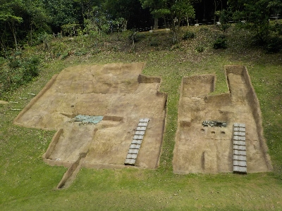

荒神谷に蓮の花を見に行きました。
2024/07/13

まだ沢山咲いてるでしょうと思って行きましたが、ほぼ終わってました。

ズームなしで撮れる花で、キレイなものはこれ１つだけしか見つけれませんでした。

咲き切った花もなかなかいいものですね。いもにも散りそうです。

遺跡が整備されていました。歴史が好きな人には貴重な場所でしょうね。
島根県出雲市斐川町神庭873番地8
2024/07/13

まだ沢山咲いてるでしょうと思って行きましたが、ほぼ終わってました。

ズームなしで撮れる花で、キレイなものはこれ１つだけしか見つけれませんでした。

咲き切った花もなかなかいいものですね。いもにも散りそうです。

遺跡が整備されていました。歴史が好きな人には貴重な場所でしょうね。
2008/07/14
ハス祭りが終わって1週間過ぎましたが、まだまだ綺麗でした。
上の方では花が終わっている所もありましたが、下の方ではまだ蕾もありました。一斉には咲かないのかもしれません。そう思うと花の期間が長くていいですね。
7月の半ばになると朝でも暑いですが、人がまばらなところでのんびりと花見をするのもいいものだなと思いました